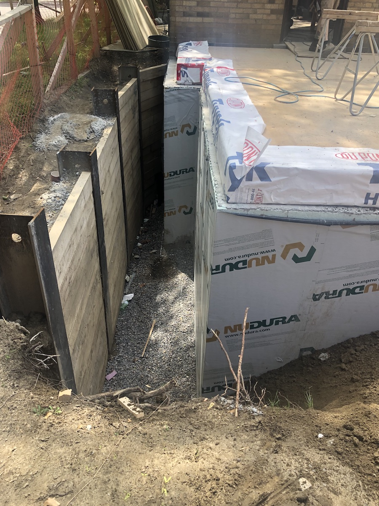
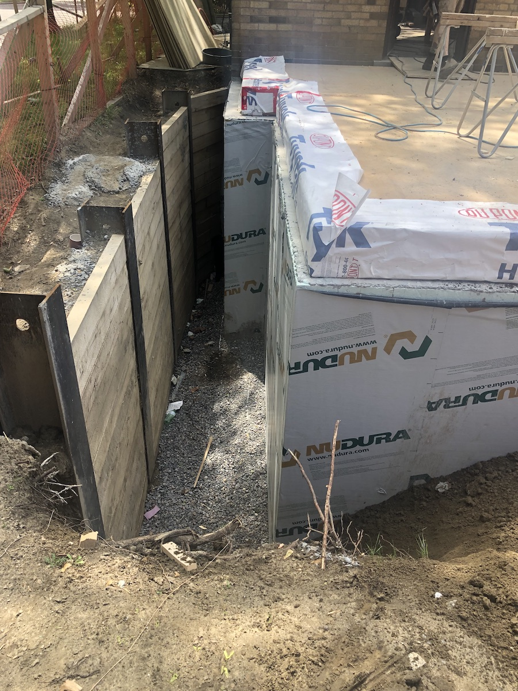

Installation of an earth-retention system is often required on certain deep excavation projects . The most commonly used system is soldier piles and lagging . This requires drilling vertically to a specified depth , dropping steel beams into the holes and encasing them in concrete . Then 3" thick timber lagging is then installed horizontally between the beams . As well , there are other methods that can be engineered to exclude the use of steel and significantly reduce the drilling depth nessecary .
 
